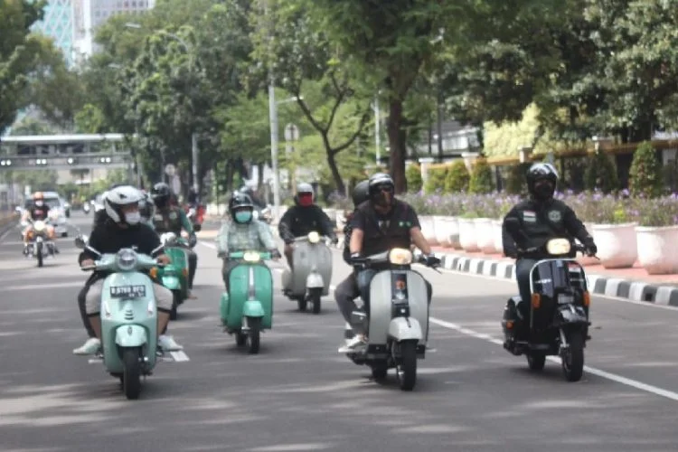

sebelum belajar untuk berjalan menggunakan vespa,alangkah baiknya untuk membiasakan diri dengan penggunaan perseneling,karena penggunaannya sangat berbeda dengan honda lainnya
setelah terbiasa dengan penggunaan perseneling,barulah melangkah ke step berikut nya, yaitu keseimbangan dalam menggunakan vespa
dikarenakan mesin vespa ini berada di sebelah kanan, maka berat vespa akan lebih cenderung ke kanan,maka penting untuk menjaga keseimbangan

setelah sudah terbiasa dengan step 1 dan 2 , barulah memulai dengan menghidupkan dan menjalankan vespa secara perlahan ,sambil memainkan perseneling
 SEJARAH TENTANG VESPA